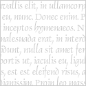

Begin
In the heart of Eldoria village lived Professor Amelia Whizbang, an eccentric inventor. One day, she stumbled upon a forgotten device in her cluttered workshop. Activating it, she found herself in the Realm of Wonders, a magical dimension where imagination shaped reality.
The drama

Embracing this newfound world, Professor Whizbang's inventions came to life as whimsical creatures. Word spread, and Eldoria transformed into a hub of creativity, attracting dreamers and artists. The once-ordinary village became a beacon of inspiration, thanks to the professor's magical portal and the endless possibilities of the Realm of Wonders.
Final
As the village flourished, Professor Whizbang encountered challenges in balancing the enchanting realm with the everyday life of Eldoria. The villagers faced dilemmas of choosing between practicality and wonder, but in the end, they found harmony in embracing both. Eldoria became a unique blend of the ordinary and the extraordinary, a place where the boundaries between reality and imagination blurred, creating a vibrant tapestry of creativity that continued to captivate the hearts of all who ventured there.